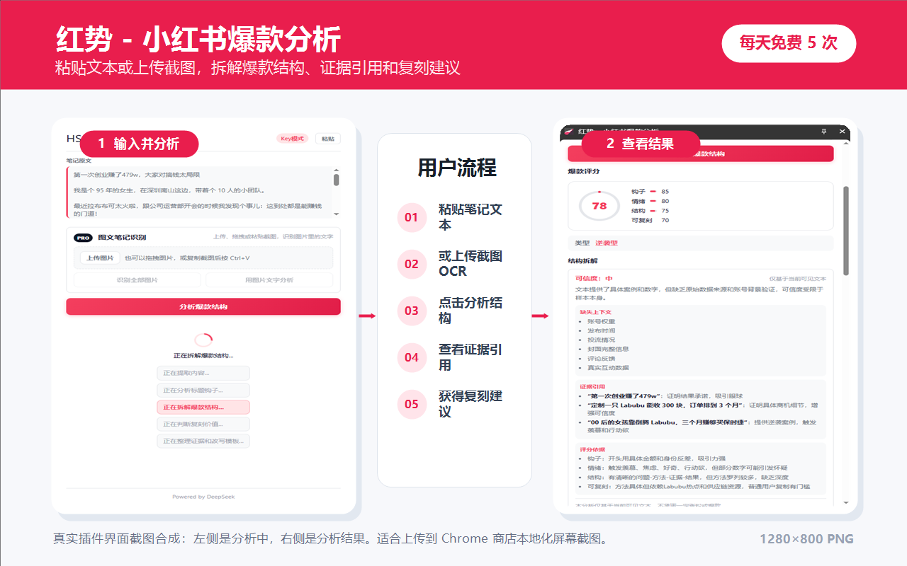
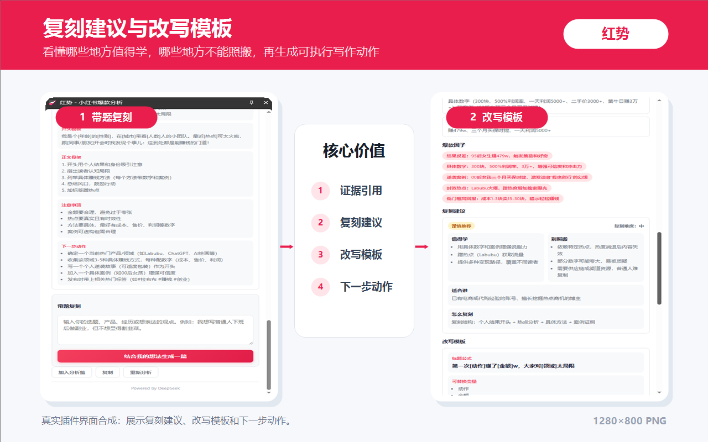
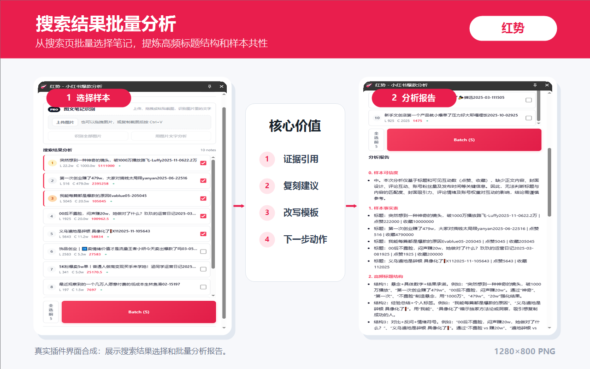

输入并分析
粘贴笔记文本或上传截图，点击分析后查看评分、证据引用和复刻建议。
小红书爆款分析
拆解小红书笔记的标题钩子、内容结构、证据引用、可信度、复刻建议和改写模板。免费每天 5 次，API Key 可选。
这些截图展示了红势的主要工作流：输入内容、查看分析结果、复刻改写、搜索批量分析。

粘贴笔记文本或上传截图，点击分析后查看评分、证据引用和复刻建议。

看懂哪些地方值得学，哪些地方不能照搬，再生成可执行写作动作。

从搜索页批量选择笔记，提炼高频标题结构和样本共性。